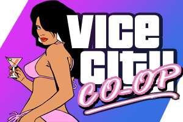

About Us
Vice City: CO-OP. A Modification for GTA: Vice City that make players able to play together.
Its a mod that allow you play with another players online with pedestrians and missions.
as it planned for or having custom game modes with perks of good sync, scripting language and pedestrians.
